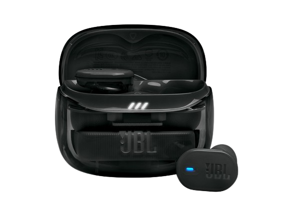
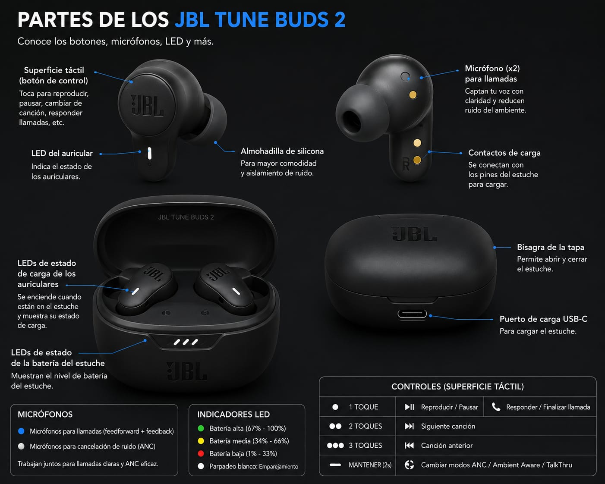
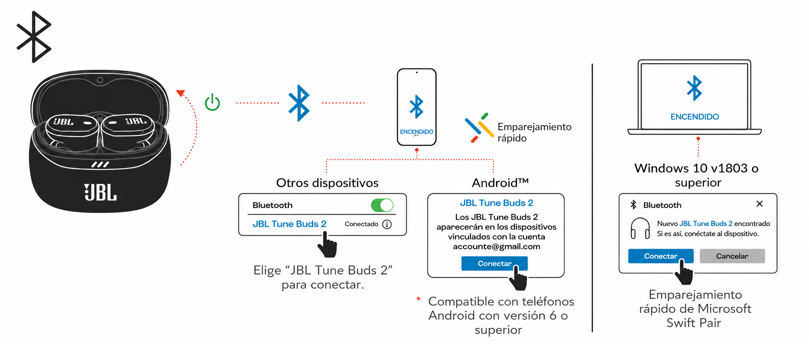
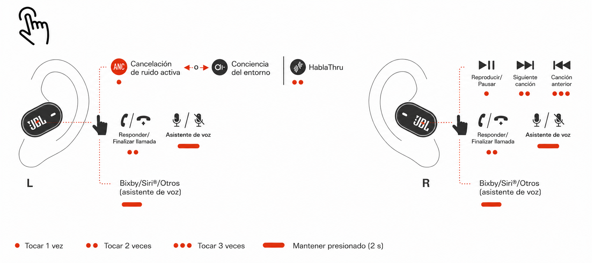
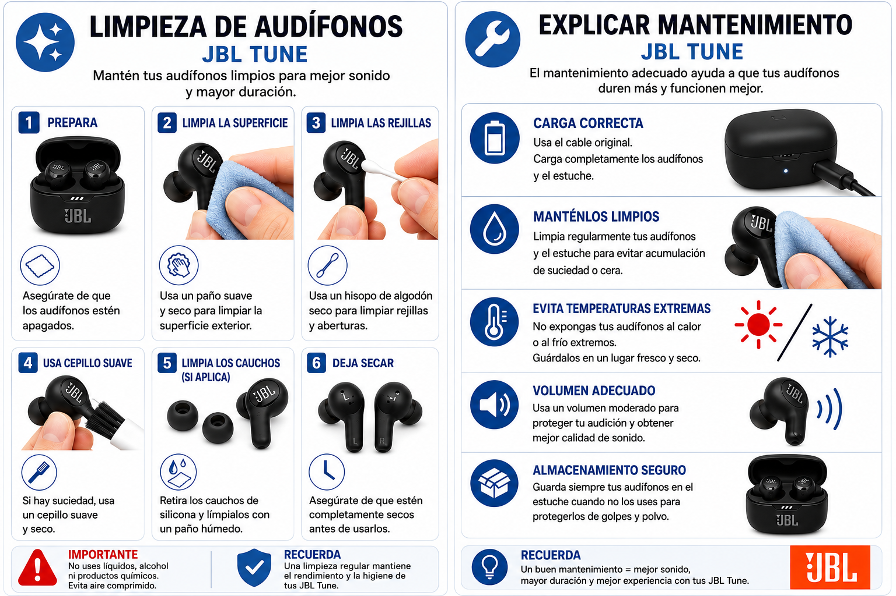
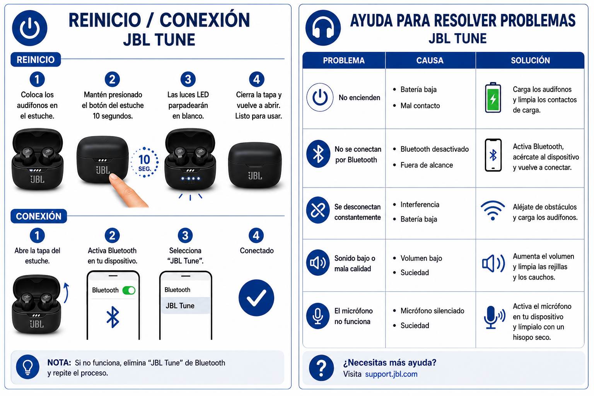

Guía de uso, configuración, mantenimiento y solución
de problemas de los audífonos inalámbricos JBL Tune Buds 2.

Los JBL Tune Buds 2 son audífonos inalámbricos
diseñados para brindar una experiencia de audio práctica,
cómoda y sin cables.
En este manual encontrarás información para configurar,
utilizar, cargar, cuidar y solucionar problemas frecuentes
relacionados con los JBL Tune Buds 2.
Marca: JBL
Modelo: Tune Buds 2
Índice
En este apartado se presenta la estructura general
del Manual de Usuario de los JBL Tune Buds 2.
Selecciona cualquier sección para acceder directamente
a su contenido.
Los JBL Tune Buds 2 son audífonos inalámbricos
diseñados para reproducir sonido y permitir la comunicación
mediante tecnología Bluetooth.
Estos audífonos pueden utilizarse con teléfonos celulares,
tabletas, computadoras y otros dispositivos compatibles
con Bluetooth. Su diseño permite escuchar música,
videos, podcasts y realizar llamadas sin necesidad de
utilizar cables entre los audífonos y el dispositivo.
Este manual explica de manera sencilla cómo utilizar,
conectar, cargar y mantener correctamente los
JBL Tune Buds 2, además de proporcionar
recomendaciones para resolver algunos problemas frecuentes.
Prerrequisitos
Antes de comenzar a utilizar los JBL Tune Buds 2 se recomienda
verificar que se cumplan las siguientes condiciones:
Tener los audífonos y el estuche de carga
suficientemente cargados.
Contar con un dispositivo compatible con Bluetooth.
Activar el Bluetooth del dispositivo.
Mantener los audífonos dentro del alcance
de conexión Bluetooth.
Comprobar que los audífonos no estén conectados
a otro dispositivo.
Leer las instrucciones antes de realizar
la primera conexión.
Antes del primer uso
Durante el primer uso se recomienda cargar los
JBL Tune Buds 2 y su estuche de carga.
Posteriormente se debe realizar el proceso de
emparejamiento con el dispositivo Bluetooth.
Una vez realizada esta configuración, las conexiones
posteriores podrán efectuarse de manera más rápida,
dependiendo del dispositivo utilizado.
2. Cuerpo operativo
En esta sección se explican las principales funciones
de los JBL Tune Buds 2 y los procedimientos
necesarios para utilizarlos correctamente.
Se recomienda seguir las instrucciones en el orden
presentado, especialmente durante la primera
configuración de los audífonos.
2.1. Mapa de navegación
Los JBL Tune Buds 2 cuentan con diferentes componentes
y controles que permiten administrar sus funciones
principales.

Principales controles y componentes
Superficie táctil:
permite controlar diferentes funciones de reproducción,
llamadas y otras acciones configurables.
Audífono izquierdo:
identificado con la letra L y destinado al oído izquierdo.
Audífono derecho:
identificado con la letra R y destinado al oído derecho.
Micrófonos:
permiten captar la voz durante las llamadas
y utilizar las funciones de los audífonos.
Estuche de carga:
permite guardar y cargar los dos audífonos.
Puerto USB:
permite conectar el estuche a una fuente de
alimentación para cargarlo.
Indicadores de carga:
muestran información relacionada con el estado
de carga del estuche y los audífonos.
Almohadillas:
permiten adaptar los audífonos al oído para
proporcionar mayor comodidad y ajuste.
Identificación de los lados
Para utilizar correctamente los JBL Tune Buds 2 es
importante identificar cuál corresponde al lado
izquierdo y cuál al lado derecho.
L = Left = Izquierdo
R = Right = Derecho
Controles táctiles
Los JBL Tune Buds 2 incorporan controles táctiles
que permiten realizar diferentes acciones sin utilizar
botones físicos tradicionales.
Controlar la reproducción de contenido.
Administrar llamadas.
Cambiar entre funciones disponibles.
Activar determinadas funciones configurables.
Indicadores
Los indicadores de los JBL Tune Buds 2 y del estuche
proporcionan información visual sobre diferentes
estados del producto.
Estado de carga.
Estado de conexión.
Estado de la batería.
Funcionamiento del estuche.
2.2. Guías paso a paso
Las siguientes instrucciones presentan los procedimientos
básicos para utilizar correctamente los JBL Tune Buds 2.
Encendido y apagado
Los JBL Tune Buds 2 están diseñados para encenderse
y apagarse automáticamente mediante su estuche
y el proceso de colocación o almacenamiento.
Para encenderlos
Abrir el estuche de carga.
Retirar los JBL Tune Buds 2.
Colocar los audífonos correctamente en los oídos.
Verificar que estén preparados para conectarse
mediante Bluetooth.
Para guardarlos y apagarlos
Retirar los audífonos de los oídos.
Colocar el audífono izquierdo y el derecho
dentro del estuche.
Comprobar que estén correctamente colocados.
Cerrar el estuche.
Guardar los JBL Tune Buds 2 en su estuche cuando
no están en uso ayuda a protegerlos y permite
realizar su carga.
Carga de los JBL Tune Buds 2
Mantener la batería cargada permite utilizar
los audífonos durante más tiempo sin interrupciones.
Cargar los audífonos
Abrir el estuche de carga.
Colocar correctamente los dos audífonos
dentro del estuche.
Verificar que los contactos de carga
estén correctamente ubicados.
Cerrar el estuche si se desea continuar
con el proceso de carga.
Cargar el estuche
Localizar el puerto USB del estuche.
Conectar el cable de carga compatible.
Conectar el otro extremo a una fuente
de alimentación adecuada.
Verificar el indicador de carga.
Esperar hasta completar la carga.
Recomendaciones de carga
Se recomienda utilizar un cable de carga adecuado
y revisar periódicamente el estado del cable.
No se deben utilizar accesorios que presenten
daños visibles.
Conexión mediante Bluetooth
Los JBL Tune Buds 2 utilizan tecnología Bluetooth
para conectarse de forma inalámbrica con dispositivos
compatibles.

Procedimiento
Abrir el estuche y retirar los audífonos.
Activar Bluetooth en el teléfono,
tableta o computadora.
Abrir la lista de dispositivos disponibles.
Buscar JBL Tune Buds 2.
Seleccionar JBL Tune Buds 2.
Esperar la confirmación de conexión.
Reproducir contenido de audio para comprobar
que la conexión funciona correctamente.
Primera conexión
Durante la primera conexión puede ser necesario
colocar los audífonos en modo de emparejamiento.
El dispositivo debe mostrar el nombre
JBL Tune Buds 2 en la lista
de dispositivos Bluetooth disponibles.
Se recomienda mantener los audífonos cerca
del dispositivo durante el primer emparejamiento.
Reproducción de música
Una vez conectados, los JBL Tune Buds 2 pueden
utilizarse para reproducir música, videos,
podcasts y otros contenidos multimedia.

Conectar los audífonos mediante Bluetooth.
Abrir una aplicación de reproducción de audio.
Seleccionar una canción, video o contenido.
Iniciar la reproducción.
Utilizar los controles táctiles para
administrar las funciones disponibles.
Funciones de control
Reproducir o pausar contenido.
Administrar llamadas.
Cambiar entre funciones disponibles.
Controlar diferentes funciones configurables.
Las funciones de los controles pueden configurarse
de acuerdo con las opciones disponibles para
los JBL Tune Buds 2.
Realizar llamadas
Los JBL Tune Buds 2 cuentan con micrófonos integrados
que permiten utilizarlos durante llamadas.
Conectar los audífonos mediante Bluetooth.
Realizar o contestar una llamada.
Hablar utilizando los micrófonos integrados.
Mantener los micrófonos libres de obstáculos.
Finalizar la llamada mediante el control
correspondiente.
Para mejorar la calidad de la llamada se recomienda
mantener los micrófonos limpios y hablar de manera
clara.
2.3. Reglas de uso
Para conservar los JBL Tune Buds 2 en buenas condiciones
se recomienda seguir estas reglas básicas:
Mantener los audífonos y el estuche cargados.
Evitar exponerlos a temperaturas extremas.
Evitar el contacto con líquidos cuando no
corresponda a las condiciones de uso del producto.
No utilizar cables o accesorios dañados.
Evitar golpes, caídas y presión excesiva.
No ejercer fuerza innecesaria sobre los controles táctiles.
Mantener los audífonos limpios.
Guardarlos dentro del estuche cuando no estén en uso.
Evitar dejarlos conectados innecesariamente.
Revisar periódicamente el estado de los audífonos
y del estuche de carga.
Limpieza

Para limpiar los JBL Tune Buds 2 se recomienda utilizar
un paño suave y seco.
No se deben aplicar líquidos directamente sobre
los audífonos ni sobre sus componentes electrónicos.
Una limpieza periódica ayuda a conservar la apariencia
y el funcionamiento adecuado del dispositivo.
3. Soporte y cierre
Esta sección proporciona recomendaciones para solucionar
problemas comunes y consultar información básica sobre
el funcionamiento de los JBL Tune Buds 2.
Antes de solicitar asistencia técnica se recomienda
revisar las soluciones incluidas en este manual.
3.1. Solución a problemas
A continuación se presentan algunos de los problemas
más frecuentes y sus posibles soluciones.

Los JBL Tune Buds 2 no encienden
Posible causa:
batería descargada.
Solución:
colocar los audífonos dentro del estuche y comprobar
que tengan carga. También se debe cargar el estuche
si es necesario.
No se conectan mediante Bluetooth
Posibles causas:
Bluetooth desactivado.
Audífonos conectados a otro dispositivo.
Distancia excesiva entre los dispositivos.
Problema durante el emparejamiento.
Solución:
activar Bluetooth, acercar los dispositivos,
comprobar la lista de conexiones y seleccionar
nuevamente JBL Tune Buds 2.
No producen sonido
Posibles causas:
Volumen demasiado bajo.
Salida de audio incorrecta.
Problema de conexión Bluetooth.
Solución:
verificar el volumen, comprobar que los
JBL Tune Buds 2 estén conectados y seleccionar
correctamente la salida de audio.
Se desconectan constantemente
Posible causa:
distancia excesiva o interferencias.
Solución:
acercar los audífonos al dispositivo y evitar
obstáculos o posibles fuentes de interferencia.
No cargan correctamente
Posibles causas:
Cable defectuoso.
Conector mal colocado.
Estuche sin batería.
Contactos de carga sucios.
Solución:
comprobar el cable, revisar el puerto de carga,
verificar el estuche y limpiar cuidadosamente
los contactos si fuera necesario.
Problemas con el micrófono
Posibles causas:
Micrófono bloqueado o sucio.
Permisos de la aplicación.
Problemas de conexión.
Solución:
comprobar que los micrófonos estén limpios,
revisar los permisos de la aplicación y verificar
la conexión Bluetooth.
3.2. Catálogo de posibles errores
o mensajes de error
La siguiente tabla presenta algunos mensajes,
indicadores o situaciones que pueden aparecer
durante el funcionamiento de los JBL Tune Buds 2.
Mensaje o indicador
Posible significado
Acción recomendada
Bluetooth no conectado.
No existe una conexión activa entre
los audífonos y el dispositivo.
Activar Bluetooth y conectar nuevamente
los JBL Tune Buds 2.
Dispositivo no encontrado.
Los audífonos no están disponibles
para el emparejamiento.
Comprobar que los JBL Tune Buds 2 estén
encendidos y disponibles para conectarse.
Batería baja.
La carga disponible es insuficiente.
Colocar los audífonos en el estuche
y realizar la carga correspondiente.
No se puede conectar.
Existe un problema durante
el emparejamiento.
Reiniciar Bluetooth e intentar nuevamente
la conexión.
Problema de carga.
Puede existir un problema con el cable,
el estuche o los contactos de carga.
Revisar cable, puerto, estuche y contactos
de carga.
Importante:
Los indicadores y mensajes pueden variar dependiendo
de la situación y del dispositivo conectado.
3.3. Glosario
Bluetooth
Tecnología inalámbrica utilizada para conectar
dispositivos compatibles.
Emparejamiento
Proceso mediante el cual los JBL Tune Buds 2
establecen una conexión con otro dispositivo Bluetooth.
LED
Luz indicadora utilizada para mostrar diferentes
estados del dispositivo o del estuche.
Micrófono
Componente encargado de captar la voz del usuario
durante las llamadas.
Batería
Componente que almacena energía y permite que
los audífonos funcionen.
Estuche de carga
Accesorio utilizado para guardar y cargar
los JBL Tune Buds 2.
Puerto USB
Entrada utilizada para conectar el cable
de carga del estuche.
Audio
Señal sonora que puede incluir música,
voz, efectos y otros contenidos.
Control táctil
Superficie que permite ejecutar determinadas
funciones mediante toques.
Dispositivo compatible
Teléfono, computadora, tableta u otro equipo
que pueda establecer una conexión Bluetooth
con los JBL Tune Buds 2.
3.4. Contactos
Para obtener asistencia adicional se recomienda
contactar al servicio de atención al cliente o
solicitar soporte técnico cuando se presente
algún inconveniente con los JBL Tune Buds 2.
Canales de atención
Servicio de atención al cliente:
disponible para consultas generales sobre el producto.
Soporte técnico:
encargado de brindar ayuda ante problemas
de configuración o funcionamiento.
Correo electrónico:
Número de teléfono:
Información recomendada al solicitar soporte
Cuando se contacte al servicio técnico es conveniente
proporcionar información que ayude a identificar
el problema.
Marca: JBL.
Modelo: Tune Buds 2.
Descripción del problema.
Mensaje de error presentado.
Tiempo aproximado desde que comenzó el problema.
3.5. Preguntas frecuentes
En esta sección encontrarás respuestas rápidas
a algunas dudas comunes sobre el uso de los
JBL Tune Buds 2.
¿Cómo puedo conectar los JBL Tune Buds 2 a mi teléfono?
Activa el Bluetooth del teléfono, abre el estuche
y prepara los audífonos para la conexión. Busca
JBL Tune Buds 2 en la lista de
dispositivos disponibles, selecciónalos y espera
la confirmación de conexión.
¿Qué hago si los JBL Tune Buds 2 no aparecen en Bluetooth?
Comprueba que los audífonos tengan batería,
que estén disponibles para el emparejamiento
y que el Bluetooth del teléfono esté activado.
Acerca los audífonos al dispositivo e intenta
nuevamente.
¿Qué hago si no se escucha el audio?
Comprueba el nivel de volumen, verifica que
los JBL Tune Buds 2 estén correctamente conectados
y asegúrate de que sean la salida de audio
seleccionada.
¿Puedo utilizar los JBL Tune Buds 2 durante una llamada?
Sí. Los JBL Tune Buds 2 cuentan con micrófonos
integrados que permiten realizar y recibir
llamadas cuando están conectados a un dispositivo
compatible.
¿Qué hago cuando la batería está baja?
Coloca los JBL Tune Buds 2 dentro del estuche
de carga y verifica que el estuche tenga
suficiente batería. Si es necesario, conecta
el estuche a una fuente de alimentación.
¿Dónde debo guardar los JBL Tune Buds 2 cuando no los uso?
Se recomienda guardar los dos audífonos dentro
de su estuche de carga cuando no estén en uso.
Esto ayuda a protegerlos y mantenerlos disponibles
para el siguiente uso.
¿Cómo debo limpiar los JBL Tune Buds 2?
Utiliza un paño suave y seco. Evita aplicar líquidos
directamente sobre los audífonos y sus componentes
electrónicos.
¿Qué hago si los audífonos siguen sin funcionar?
Revisa las soluciones incluidas en este manual.
Comprueba la carga, la conexión Bluetooth y el
funcionamiento del estuche. Si el problema continúa,
solicita asistencia técnica.